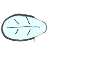
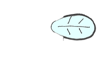
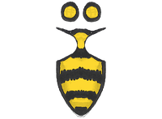
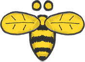

This page-turning reader needs JavaScript. Every article is also available as plain, readable text:
List of all articles (text version)
▼ Scroll down to read this article
▲ Scroll up for the other articles
◯ Click the sky around an article to close it




You’ve reached the western edge of the articles. The main site is one step further.
Taking you to krisfricke.github.io…